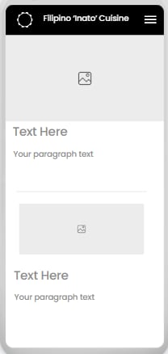
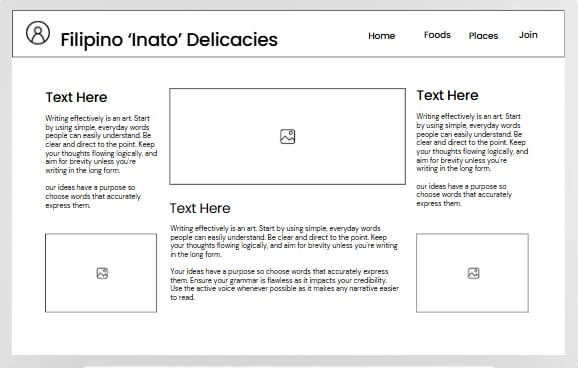

Site Name: Filipino 'Inato' Delicacies
This name presents your first journey to Filipino Quisine.
Site Purpose:
This site provides informational knowledge about traditional Filipino Quisines with an application form to join for a scheduled cooking class.
Scenarios:
What is the best Filipino food to start with?
Where can I find classes that helps me cook Filipino Cuisine?
Color Schema:
#0038A7 - Header
red - Footer
gold - Background Color
#eee - borders
Typography:
Heading-font: "Original Surfer", sans-serif
Body-font: "Segoe UI", sans-serif
Wireframes:

